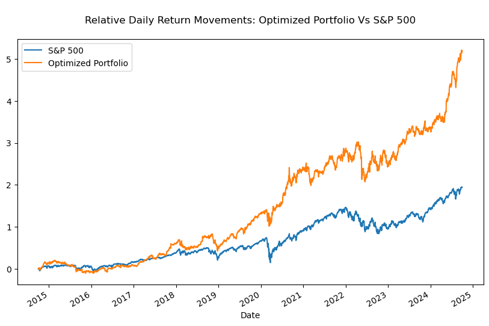
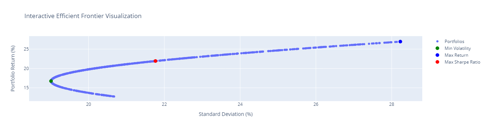
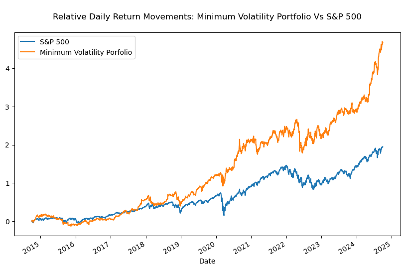
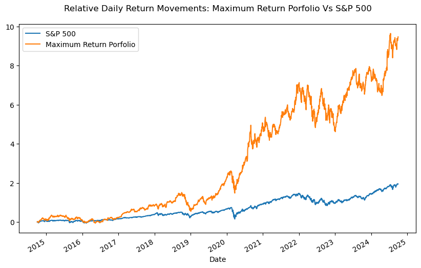
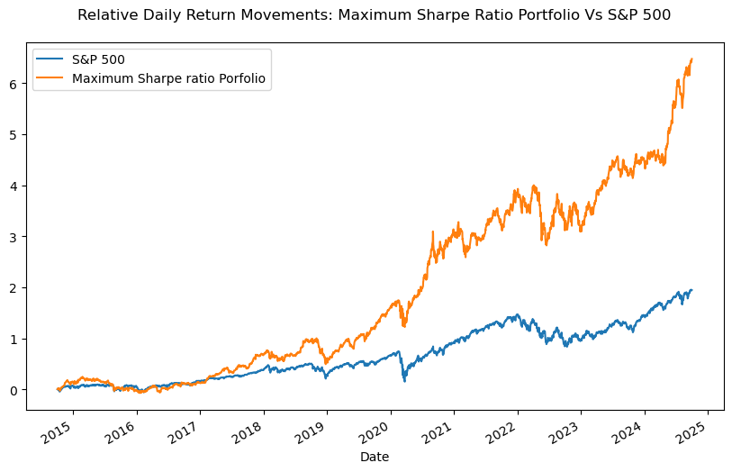

Overview
This project conducts a comprehensive analysis of a portfolio consisting of Apple Inc. (AAPL) and Walmart Inc. (WMT) stocks over a 10-year period. It utilizes portfolio optimization techniques to balance risk and return. By analyzing historical performance and applying methods such as mean-variance optimization and Markowitz efficient frontier analysis, it provides insights into how different asset allocations can impact overall portfolio performance and risk.
View the full project on Github.
Approach and Methodology
- Data Collection: Historical daily adjusted closing price data for AAPL and WMT from Yahoo Finance.
- Data Analysis:
- Calculation of annualized returns and volatility for each asset.
- Construction of a correlation matrix to assess the relationships between the assets.
- Optimization Techniques:
- Mean-Variance Optimization: Using cvxpy to minimize portfolio volatility while achieving a target return.
- Markowitz Efficient Frontier Analysis: Identification of portfolios that offer the minimum volatility, maximum return, and maximum Sharpe ratio.
- Visualization: Plotting the efficient frontier and optimized portfolio allocations.
Visuals
Mean-Variance Optimization Results

Markowitz Efficient Frontier Analysis
Interactive Efficient Frontier with plotly:

Minimum Volatility Portfolio:

Maximum Return Portfolio:

Maximum Sharpe Ratio Portfolio:
